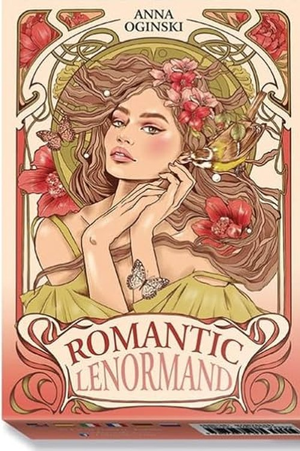
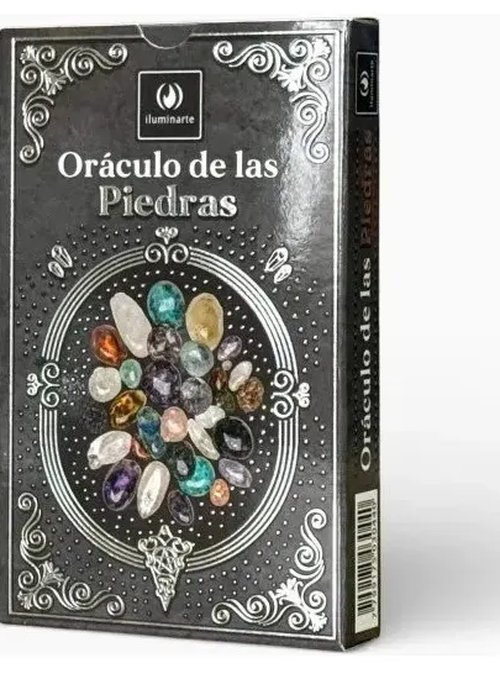
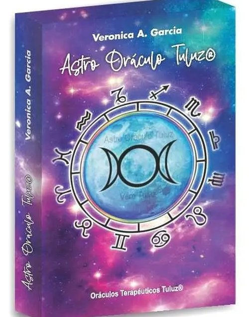
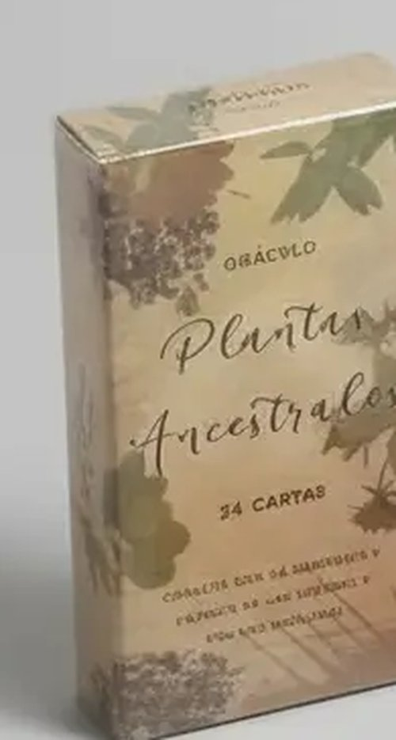
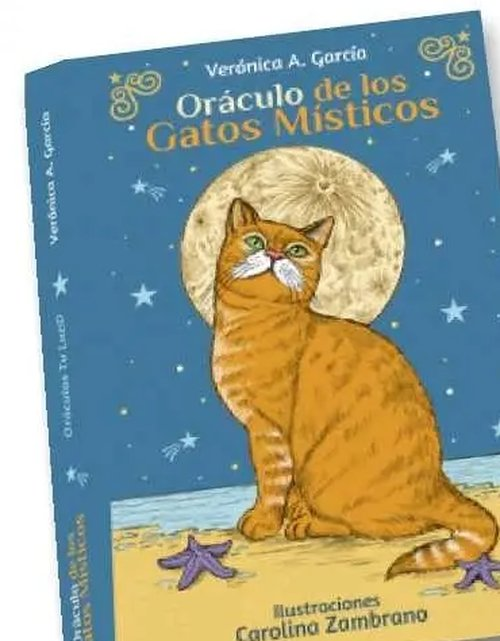
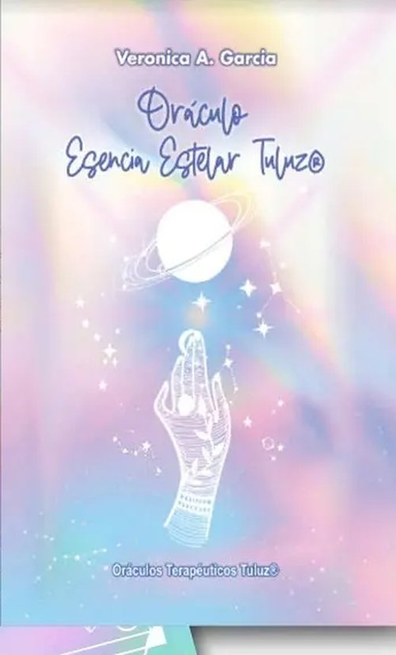

🔮 ¿Qué es una lectura de oráculo? A diferencia del tarot, el oráculo entrega mensajes más directos e intuitivos.
Es ideal para momentos donde necesitás una orientación clara y rápida, sin una tirada extensa.
Va incluido en cualquier lectura de Tarot, sin cargo.
Mis mazos
Estos son los oráculos con los que trabajo hoy

Romantic Lenormand

Oráculo de las Piedras

Astro Oráculo Tuluz

Plantas Ancestrales

Gatos Místicos

Esencia Estelar Tuluz
💡 ¿Querés un oráculo solo, sin lectura de Tarot? Escribime y coordinamos igual.